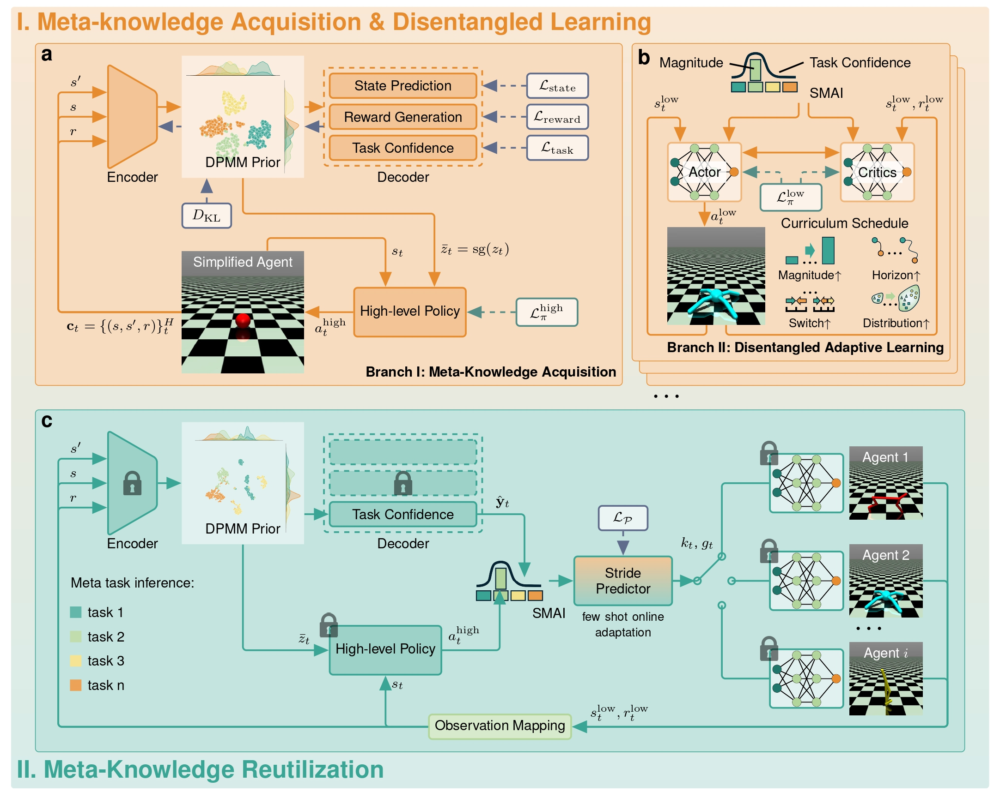

Meta-reinforcement learning enables fast adaptation by extracting shared structure from related tasks, but existing end-to-end methods often couple task inference with embodiment-specific control. This coupling can obscure non-parametric task semantics, reduce sample efficiency, and limit cross-agent reuse. We propose a meta-knowledge reutilization framework that learns task-level knowledge on a dynamics-simplified agent and transfers it to heterogeneous agents. The framework uses a Bayesian non-parametric prior to organize latent task modes and a high-level policy to generate task-level magnitude guidance. To bridge reusable task knowledge with different embodiments, we introduce a semantic-magnitude interface and a lightweight temporal adaptor, which convert frozen meta-knowledge into temporally aligned subgoals for embodiment-specific low-level controllers. Experiments on multiple locomotion agents show that our framework reduces final-step tracking error by 94.75%-99.79% compared with recent state-of-the-art baselines and achieves comparable deployment performance with about 23.8% of their interaction data.
Supplementary experiment videos for simplified-agent inference, meta-knowledge reuse, and baselines.

The first branch learns reusable task-level meta-knowledge in a dynamics-simplified environment. Instead of training the inference module directly on high-dimensional robot bodies, the simplified agent preserves task-relevant variables, such as position, velocity, and reward, while removing embodiment-specific control complexity. A context encoder maps recent transition and reward histories into a latent task representation, which is regularized by a Bayesian non-parametric prior to organize non-parametric task modes without predefining the number of components. The decoder reconstructs state transitions, rewards, and task confidence, encouraging the latent variable to encode semantic task information. In parallel, a high-level policy learns to generate abstract task-level actions from the inferred task representation. After training, the inference module and high-level policy form a frozen meta-knowledge module that captures task semantics rather than morphology-dependent motion patterns.
The second branch trains low-level controllers for target agents with complex dynamics. This branch is independent of the task inference module and high-level policy, so the low-level policies are not required to infer task semantics. Their objective is to acquire stable embodiment-specific motion patterns and to learn how to respond to task-level magnitude commands. To achieve this, we introduce a semantic-magnitude guidance signal that couples a semantic command channel with a scalar magnitude. The low-level policy is trained with an actor-critic objective under a curriculum schedule that progressively increases command magnitude, switching frequency, rollout horizon, and initial-state diversity. This design first stabilizes basic locomotion and then exposes the controller to increasingly non-stationary subgoal changes. As a result, each target agent learns an execution layer that can translate abstract magnitude guidance into feasible motor actions under its own morphology and dynamics.
During deployment, the learned task inference module and high-level policy are frozen and reused across different target agents. Each agent first maps its raw embodiment-specific observations into a shared abstract state space, retaining task-relevant quantities such as global position and velocity while filtering out morphology-dependent joint information. The frozen inference module then estimates the current task context and task confidence, and the high-level policy generates a task-level magnitude signal. This magnitude is embedded into the corresponding semantic channel to form a reusable semantic-magnitude subgoal for the low-level controller. Since different embodiments may require different execution durations for the same subgoal, a lightweight stride predictor performs few-shot online adaptation to temporally align the frozen task guidance with the target agent dynamics. This closed-loop process enables the same meta-knowledge module to guide heterogeneous agents without retraining task inference or high-level reasoning from scratch.